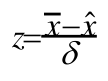
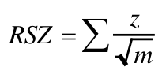
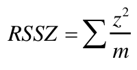

International Standards · ISL
Edition 2004 (v4.0) (version 4.0) · effective 1 January 2004 · superseded
Retrieved on 25 November 2026 from https://www.wada-ama.org/sites/default/files/resources/files/WADA_International_Standard_Laboratories_v.4.0_FINAL.pdf
Editions: 2027 (current) · 2021 · 2019 (v10.0) · 2016 (v9.0) · 2015 (v8.0) · 2012 (v7.0) · 2009 (v6.0) · 2008 (v5.0) · 2004 (v4.0)
p. 1
International Standard for Laboratories
The World Anti-Doping Code
Version 4.0
August 2004
p. 2
PREAMBLE
The World Anti-Doping Code International Standard for Laboratories is a mandatory level 2 International Standard developed as part of the World Anti-Doping Program.
The basis for the International Standard for Laboratories is the relevant Sections in the Olympic Movement Anti-Doping Code. An expert group, together with a WADA Laboratory Accreditation Committee, has prepared the document and drafts have been circulated for initial review and comment from all IOC accredited doping Laboratories and the IOC Sub-Commission on Doping and Biochemistry of Sport.
Version 1.0 of the International Standard for Laboratories was circulated to Signatories, governments and accredited laboratories for review and comments in November 2002. Version 2.0 was based on the comments and proposals received from these stakeholders.
All Signatories, governments and Laboratories were consulted and have had the opportunity to review and provide comments to version 2.0. This draft version 3.0 was presented for approval to the WADA Executive Committee on June 7th 2003.
The International Standard for Laboratories will come into effect on January 1st 2004.
Currently, Laboratories are accredited by the International Olympic Committee (IOC). As part of the transition of the program from existing IOC accreditation to WADA accreditation, accreditation bodies shall require the Laboratories to which they grant and maintain accreditation to comply with the requirements of the International Standard for Laboratories and ISO/IEC 17025 by January 1st , 2004. For Laboratories moving from IOC to WADA accreditation (see Section 4.1.7), an internal audit before January 1st , 2004 shall be deemed compliant with the International Standard for Laboratories. The next ISO surveillance or re-accreditation audit conducted by the national accrediting body in 2004 shall document compliance with the International Standard for Laboratories. Laboratories seeking initial WADA accreditation shall have an on-site accreditation audit by their national accrediting body compliant with this standard before receiving WADA accreditation.
The official text of the International Standard for Laboratories shall be maintained by WADA and shall be published in English and French. In the event of any conflict between the English and French versions, the English version shall prevail.
p. 3
p. 4
PART ONE: INTRODUCTION, CODE PROVISIONS AND DEFINITIONS
1.0 Introduction, Scope and References
The main purpose of the International Standard for Laboratories is to ensure laboratory production of valid test results and evidentiary data and to achieve uniform and harmonized results and reporting from all accredited Doping Control Laboratories.
The International Standard for Laboratories includes requirements for WADA accreditation of doping laboratories, operating standards for laboratory performance and description of the accreditation process.
The International Standard for Laboratories, including all Annexes and Technical Documents, is mandatory for all Signatories to the Code.
The World Anti-Doping Program encompasses all of the elements needed in order to ensure optimal harmonization and best practice in international and national anti-doping programs. The main elements are: the Code (Level 1), International Standards (Level 2), and Models of Best Practice (Level 3).
In the introduction to the World Anti-Doping Code (Code), the purpose and implementation of the International Standards are summarized as follows:
"International Standards for different technical and operational areas within the anti-doping program will be developed in consultation with the Signatories and governments and approved by WADA. The purpose of the International Standards is harmonization among Anti-Doping Organizations responsible for specific technical and operational parts of the anti-doping programs. Adherence to the International Standards is mandatory for compliance with the Code. The International Standards may be revised from time to time by the WADA Executive Committee after reasonable consultation with the Signatories and governments. Unless provided otherwise in the Code, International Standards and all revisions shall become effective on the date specified in the International Standard or revision."
Compliance with an International Standard (as opposed to another alternative standard, practice or procedure) shall be sufficient to conclude that the procedures covered by the International Standard were performed properly.
This document sets out the requirements for Doping Control Laboratories that wish to demonstrate that they are technically competent, operate an effective quality management system, and are able to produce forensically valid results. Doping Control Testing involves the detection, identification, and in some cases demonstration of the presence greater than a threshold concentration of drugs and other substances deemed to be prohibited by the list of Prohibited Substances and Prohibited Methods (The Prohibited List) in human biological fluids or tissues.
p. 5
The Laboratory accreditation framework consists of two main elements: Part Two of the standard: the Laboratory accreditation requirements and operating standards; and Part Three: the Annexes and Technical Documents. Part Two describes the requirements necessary to obtain WADA recognition and the procedures involved to fulfill the requirements. It also contains an application of the ISO/IEC 17025 standard to the field of Doping Control. The purpose of this section of the document is to facilitate consistent application and assessment of the ISO/IEC 17025 and the specific WADA requirements for Doping Control by accreditation bodies that operate in accordance with ISO/IEC Guide 58. The International Standard also sets forth the requirements for Doping Control Laboratories when adjudication results as a consequence of an Adverse Analytical Finding
Part Three of the Standard includes all Annexes. Annex A describes the WADA Proficiency Testing Program, including performance criteria necessary to maintain good standing in proficiency testing. Annex B describes the ethical standards required for continued WADA recognition of the Laboratory. Annex C is a list of Technical Documents. Technical Documents are issued, modified, and deleted by WADA from time to time and provide direction to the Laboratories on specific technical issues. Once promulgated, Technical Documents become part of the International Standard for Laboratories. The incorporation of the provisions of the Technical Documents into the Laboratory's quality management system is mandatory for WADA accreditation.
In order to harmonize the accreditation of Laboratories to the requirements of ISO/IEC 17025 and the WADA-specific requirements for recognition, it is expected that national accreditation bodies will use this standard, including the annexes, as a reference document in their accreditation audit process.
Terms defined in the Code, which are included in this standard, are written in italics. Terms, which are defined in this standard, are underlined.
References
These following references were consulted in the development of this document. The specific requirements and concepts of these documents do not supersede or otherwise change the requirements stated in the International Standard for Laboratories
A2LA, 2001. Proficiency Testing Requirement for Accredited Testing and Calibration Laboratories.
EA-03/04 (August 2001). Use of Proficiency Testing as a Tool for Accreditation in Testing Eurachem Proficiency Testing Mirror Group (2000). Selection, Use and Interpretation of Proficiency Testing (PT) Schemes by Laboratories.
p. 6
Eurachem/CITAC Guide, 2nd Edition (2000) Quantifying Uncertainty in Analytical Measurement.
European Union Decision 2002/657/EC Official Journal of the European Communities 17.8.2002; L 221: 8-36.
ISO/IEC 17025:1999. General requirements for the competence of testing and calibration laboratories.
International Laboratory Accreditation Cooperation (ILAC) Document G-7:1996. Accreditation Requirements and Operating Criteria for Horseracing Laboratories.
ILAC Document G-15:2001. Guidance for Accreditation to ISO/IEC 17025
ILAC Document G-17:2002. Introducing the Concept of Uncertainty of Measurement in Testing in Association with the Application of the Standard ISO/IEC 17025.
ILAC Document G-19:2002. Guideline for Forensic Science Laboratories
ILAC Document P-10:2002. ILAC Policy on Traceability of Measurement Results.
National Clinical Chemistry Laboratory Standards Document C-43A, 2002 [ISBN 1-56238-475-9]. "Gas Chromatography/Mass Spectrometry (GC/MS) Confirmation of Drugs; Approved Guideline."
Olympic Movement Anti-Doping Code (1999)
Society of Forensic Toxicology and American Academy of Forensic Sciences, Toxicology Section, 2002 (Draft). Forensic Toxicology Laboratory Guidelines.
Substance Abuse and Mental Health Services Administration (SAMHSA), United States Department of Health and Human Services (DHHS), 2001. Mandatory Guidelines for Federal Workplace Drug Testing Programs and Notice of Proposed Revisions (Federal Register 2001; 66: 43876-43882).
World Anti-Doping Code
p. 7
2.0 Code Provisions
The following articles in the Code directly address the International Standard for Laboratories:
Code Article 3.2 Methods of Establishing Facts and Presumptions
3.2.1 WADA-accredited Laboratories are presumed to have conducted Sample analysis and custodial procedures in accordance with the International Standard for laboratory analysis. The Athlete may rebut this presumption by establishing that a departure from the International Standard occurred. If the Athlete rebuts the preceding presumption by showing that a departure from the International Standard occurred, then the Anti-Doping Organization shall have the burden to establish that such departure did not cause the Adverse Analytical Finding.
Code Article 6 Analysis of Samples
Doping Control Samples shall be analyzed in accordance with the following principles: 6.1 Use of Approved Laboratories Doping Control Samples shall be analyzed only in WADA-accredited laboratories or as otherwise approved by WADA. The choice of the WADA-accredited laboratory (or other method approved by WADA) used for the Sample analysis shall be determined exclusively by the Anti-Doping Organization responsible for results management. [Comment: The phrase "or other method approved by WADA" is intended to cover, for example, mobile blood Testing procedures which WADA has reviewed and considers to be reliable.] 6.2 Substances Subject to Detection. Doping Control Samples shall be analyzed to detect Prohibited Substances and Prohibited Methods identified on the Prohibited List and other substances as may be directed by WADA pursuant to Article 4.5 (Monitoring Program). 6.3 Research on Samples. No Sample may be used for any purpose other than the detection of substances (or classes of substances) or methods on the Prohibited List, or as otherwise identified by WADA pursuant to Article 4.5 (Monitoring Program), without the Athlete's written consent. 6.4 Standards for Sample Analysis and Reporting. Laboratories shall analyze Doping Control Samples and report results in conformity with the International Standard for Laboratories analysis.
Code Article 13.5 Appeals from Decisions Suspending or Revoking Laboratory Accreditation Decisions by WADA to suspend or revoke a Laboratory's WADA accreditation may be appealed only by that Laboratory with the appeal being exclusively to CAS.
Code Article 14.1 Information Concerning Adverse Analytical Findings and Other Potential Anti-Doping Rule Violations. An Athlete whose Sample has resulted in an Adverse Analytical Finding, or an Athlete or other Person who may have violated an anti-doping rule, shall be notified by the Anti-Doping Organization with results management responsibility as provided in Article 7 (Results Management). The Athlete's National Anti-Doping Organization and International Federation and WADA shall also be notified not later than the completion of the process described in Articles 7.1 and 7.2. Notification shall include: the Athlete's name, country, sport and discipline within the sport, whether the test was In-Competition or Out-of-Competition, the date of Sample collection and the analytical result reported by the laboratory. The same Persons and Anti-Doping Organizations shall be regularly updated on the status and findings of any review or proceedings conducted pursuant to Articles 7 (Results Management), 8 (Right to a Fair Hearing) or 13 (Appeals), and, in any case in which the period of Ineligibility is eliminated under Article 10.5.1 (No Fault or Negligence), or reduced under Article 10.5.2 (No Significant Fault or Negligence), shall be provided with a written reasoned decision explaining the basis for the elimination or reduction. The recipient organizations shall not disclose this information beyond those Persons within the organization with a need to know until the Anti-Doping Organization with results management responsibility has made public disclosure or has failed to make public disclosure as required in Article 14.2.
p. 8
3.0 Terms and definitions
3.1 Code defined Terms
Adverse Analytical Finding: A report from a Laboratory or other approved Testing entity that identifies in a Specimen the presence of a Prohibited Substance or its Metabolites or Markers (including elevated quantities of endogenous substances) or evidence of the Use of a Prohibited Method.
Anti-Doping Organization: A Signatory that is responsible for adopting rules for, initiating, implementing or enforcing any part of the Doping Control process. This includes, for example, the International Olympic Committee, the International Paralympic Committee, Major Event Organizations that conduct Testing at their Events, WADA, International Federations, and National Anti-Doping Organizations.
Athlete: For purposes of Doping Control, any Person who participates in sport at the international level (as defined by each International Federation) or national level (as defined by each National Anti-Doping Organization) and any additional Person who participates in sport at a lower level if designated by the Person's National Anti-Doping Organization. For purposes of anti-doping information and education, any Person who participates in sport under the authority of any Signatory, government, or other sports organization accepting the Code.
Code: The World Anti-Doping Code.
Doping Control: The process including test distribution planning, Sample collection and handling, Laboratory analysis, results management, hearings and appeals.
p. 9
Event: A series of individual Competitions conducted together under one ruling body (e.g., the Olympic Games, FINA World Championships, or Pan American Games).
In-competition: For purposes of differentiating between In-competition and Out-of-Competition Testing, unless provided otherwise in the rules of an International Federation or other relevant Anti-Doping Organization, an In-Competition test is a test where an Athlete is drawn for Testing in connection with a specific Competition.
International Standard: A standard adopted by WADA in support of the Code. Compliance with an International Standard (as opposed to another alternative standard, practice or procedure) shall be sufficient to conclude that the procedures covered by the International Standard were performed properly.
Marker: A compound, group of compounds or biological parameters that indicates the Use of a Prohibited Substance or Prohibited Method. Metabolite: Any substance produced by a biotransformation process.
National Anti-Doping Organization: The entity(ies) designated by each country as possessing the primary authority and responsibility to adopt and implement anti-doping rules, direct the collection of Samples, the management of test results, and the conduct of hearings, all at the national level. If this designation has not been made by the competent public authority(ies), the entity shall be the country's National Olympic Committee or its designee.
National Olympic Committee: The organization recognized by the International Olympic Committee. The term National Olympic Committee shall also include the National Sport Confederation in those countries where the National Sport Confederation assumes typical National Olympic Committee responsibilities in the anti-doping area.
Out-of-Competition: Any Doping Control which is not In-competition.
Person: A natural person or an organization or other entity.
Prohibited List: The List identifying the Prohibited Substances and Prohibited Methods.
Prohibited Method: Any method so described on the Prohibited List.
Prohibited Substance: Any substance so described on the Prohibited List.
Publicly Disclose or Publicly Report: To disseminate or distribute information to the general public or Persons beyond those Persons entitled to earlier notification in accordance with Article 14.
Sample/Specimen: Any biological material collected for the purposes of Doping Control.
p. 10
Signatories: Those entities signing the Code and agreeing to comply with the Code, including the International Olympic Committee, International Federations, International Paralympic Committee, National Olympic Committees, National Paralympic Committees, Major Event Organizations, National Anti-Doping Organizations, and WADA.
Testing: The parts of the Doping Control process involving test distribution planning, Sample collection, Sample handling, and Sample transport to the Laboratory.
Use: The application, ingestion, injection or consumption by any means whatsoever of any Prohibited Substance or Prohibited Method.
WADA: The World Anti-Doping Agency.
3.2 Defined Terms from the International Standard for Laboratories
Aliquot: A portion of the Sample of biological fluid or tissue (e.g., urine, blood, etc.) obtained from the Athlete used in the testing process.
Certified Reference Material: Reference Material, accompanied by a certificate, one or more whose property values are certified by a procedure which establishes its traceability to an accurate realization of the unit in which the property values are expressed, and for which each certified value is accompanied by an uncertainty at a stated level of confidence.
Confirmation Procedure: An analytical test procedure whose purpose is to identify the presence of a specific Prohibited Substance in a Sample. [Comment: A Confirmation Procedure may also indicate a quantity of Prohibited Substance greater than a threshold value or quantify the amount of a Prohibited Substance in a Sample.]
Flexible Accreditation: Approval for a Laboratory to make restricted modifications in the scope of the accreditation without the involvement of the national accreditation body before the modifications are implemented
Intermediate Precision, sZi: Variation in results observed when one or more factors, such as time, equipment, and operator are varied within a Laboratory with i denoting the number of factors varied.
Laboratory Internal Chain of Custody: Documentation of the sequence of Persons in possession of the Sample and any portions of the Sample taken for Testing. [Comment: Laboratory Internal Chain of Custody is generally documented by a written record of the date, location, action taken, and the individual performing an action with a Sample or Aliquot.]
p. 11
Laboratory: An accredited laboratory applying test methods and processes to provide evidentiary data for the detection and, if applicable, quantification of a Threshold Substance on the Prohibited List in urine and other biological Samples.
Laboratory Documentation Packages: The material produced by the Laboratory to support the finding of an Adverse Analytical Finding as set forth in the WADA Technical Document for Laboratory Documentation Packages.
Minimum Required Performance Limit: A concentration of a Prohibited Substance or Metabolite of a Prohibited Substance or Marker of a Prohibited Substance or Method that a doping Laboratory is expected to reliably detect in the routine daily operation of the Laboratory. See Technical Document Minimum Required Performance Limits for Detection of Prohibited Substances.
Non-threshold Substance: A substance listed on the Prohibited List for which the documentable detection of any amount is considered an anti-doping rule violation. Presumptive Analytical Finding: The status of a Sample test result for which there is an adverse screening test, but a confirmation test has not been performed.
Reference Collection: A collection of samples of known origin that may be used in the determination of the identity of an unknown substance. For example, a well characterized sample obtained from a verified administration study in which scientific documentation of the identity of Metabolite(s) can be demonstrated.
Reference Material: Material or substance one or more of whose properties are sufficiently homogeneous and well established to be used for the calibration of an apparatus, the assessment of a measurement method or for assigning values to materials.
Repeatability, sᵣ: Variability observed within a laboratory, over a short time, using a single operator, item of equipment, etc.
Reproducibility, sR: Variability obtained when different laboratories analyze the same Sample.
Revocation: The permanent withdrawal of a Laboratory's WADA accreditation.
Screening Procedure: An analytical test procedure whose purpose is to identify those Samples which are suspicious with respect to containing a Prohibited Substance or Metabolite or Marker of a Prohibited Method and which require additional confirmation testing.
Split Sample: Division of a Sample taken for testing into two portions at collection, usually designated "A" and "B."
Suspension: The temporary withdrawal of a Laboratory's WADA accreditation.
Testing Authority: The International Olympic Committee, World Anti-Doping Agency, International Federation, National Sport Organization, National Anti-Doping Organization, National Olympic Committee, Major Event Organization, or other authority defined by the Code responsible for Sample collection and transport either In-Competition or Out-of-Competition and/or for management of the test result.
p. 12
Threshold Substance: A substance listed in the Prohibited List for which the detection of an amount in excess of a stated threshold is considered an Adverse Analytical Finding.
p. 13
PART TWO: LABORATORY ACCREDITATION REQUIREMENTS AND OPERATING STANDARDS
4.0 Requirements for WADA accreditation
4.1 Initial WADA accreditation
This section describes the specific requirements for the initial WADA accreditation of the laboratory. All the requirements must be fulfilled in order to obtain an initial WADA accreditation. For some of the requirements, the laboratory has to demonstrate compliance during the probationary period and for other requirements compliance will be checked and controlled based on an accreditation audit (ref. 5.1, 5.2 and 5.3).
4.1.1 ISO/IEC 17025
The laboratory shall be accredited by a relevant national accreditation body according to ISO/IEC 17025 with primary reference to the interpretations and applications of the ISO/IEC 17025 requirements as they are described in Application of ISO/IEC 17025 to the Analysis of Doping Control Samples (Section 5). The ISO/IEC 17025 accreditation must be obtained before the initial WADA accreditation will be given.
4.1.2 Letter of support
The laboratory shall provide an official letter of support from the relevant national public authority responsible for the national anti-doping program, if any, or a similar letter of support from the National Olympic Committee or National Anti-Doping Organization. The letter of support shall contain as a minimum:
-
Guarantee of sufficient financial support annually for a minimum of 3 years
-
Guarantee of sufficient numbers of Samples annually for 3 years
-
Guarantee of provision of necessary analytical facilities and instrumentation, where applicable
In addition, any explanation of exceptional circumstances shall be given due consideration by WADA. The three year letter of support does not in any way require exclusive support for only one laboratory.
Letters of support from international sport organizations such as International Federations could also be provided in addition to the above mentioned letters.
If the laboratory as an organization is linked to host organizations, (e.g. universities, hospitals…) an official letter of support from the host organizations shall be provided which should include the following information:
-
Documentation of the administrative support for the laboratory
-
Financial support for the laboratory, if relevant
p. 14
-
Support for the research and development activities
-
Guarantee of provision of necessary analytical facilities and instrumentation
4.1.3 Code of Ethics
The laboratory shall sign and comply with the provision in the Code of Ethics (Annex B) which are relevant for a laboratory in the probationary period.
4.1.4 Proficiency testing program
During the probationary period the laboratory shall successfully analyze at a minimum four sets of proficiency testing samples containing at a minimum five samples per set.
The final accreditation test shall assess both the scientific competence and the capability of the laboratory to manage multiple Samples.
4.1.5 Sharing of knowledge
The laboratory shall demonstrate during the probationary period its willingness and ability to share knowledge with other WADA Accredited Laboratories. A description of this sharing is provided in the Code of Ethics (Annex B).
4.1.6 Research
The laboratory shall demonstrate in its budget an allocation to research and development activities in the field of Doping Control of at least 7% of the annual budget for the initial 3-year period. The research activities can either be conducted by the laboratory or in cooperation with other WADA-accredited Laboratories or other research organizations.
4.1.7 Initial accreditation of Laboratories holding IOC accreditation
Laboratories accredited by the IOC in 2003 and which successfully complete the joint 2003 IOC/WADA re-accreditation test and at a minimum conduct an internal audit against Section 5 of the Internal Standard for Laboratories will receive WADA accreditation in 2004. The International Standards for Laboratories requirements will be fully in effect on January 1st , 2004. Laboratories that are downgraded or fail the 2003 IOC/WADA re-accreditation test will have their accreditation suspended or revoked by WADA in accordance with Section 6.4.8. Laboratories which have applied for, but have not received, IOC accreditation will complete their probationary period under the International Standards for Laboratories.
4.2 Maintaining WADA Accreditation
This section describes the specific requirements for a WADA re-accreditation of the Laboratory.
4.2.1 ISO/IEC 17025 accreditation
The Laboratory shall document a valid accreditation from the national accreditation body according to ISO/IEC 17025 with primary reference to the interpretations and applications of the ISO/IEC 17025 requirements as described in the Application of ISO/IEC 17025 to Analysis of Doping Control Samples (Section 5).
p. 15
4.2.2 Flexible Accreditation
WADA accredited Laboratories may add or modify scientific methods or add analytes without the need for approval by the body that completed the ISO/IEC 17025 accreditation of that Laboratory. Any analytical method or procedure must be properly selected and validated and included in the scope of the Laboratory at the next ISO audit if the method is used for analysis of Doping Control Samples.
4.2.3 Letter of support
The Laboratory shall provide a renewed official letter of support from the relevant national public authority responsible for the national anti-doping program, if any, or a similar letter of support from the National Olympic Committee or National Anti-Doping Organization in years in which the Laboratory undergoes an ISO re-accreditation audit. The renewed letter of support shall contain as a minimum:
-
Guarantee of sufficient financial support annually for a minimum of 3 years
-
Guarantee of sufficient numbers of Samples annually
-
Guarantee of provision of necessary analytical facilities and instrumentation, where applicable
Any explanation of exceptional circumstances shall be given due consideration by WADA. The letter of support does not in any way require exclusive support for only one Laboratory.
Letters of support from international sport organizations such as International Federations could also be provided in addition to the above mentioned letters.
If the Laboratory as an organization is linked to host organizations (e.g. university, hospital…), an official letter of support from the host organizations shall be renewed for each year in which the Laboratory undergoes a ISO re-accreditation audit and shall include the following information:
-
Documentation of the administrative support for the Laboratory
-
Financial support for the Laboratory, if relevant
-
Guarantee of provision of necessary analytical facilities and instrumentation
-
Support for the research activities
4.2.4 Minimum number of testing Samples
The Laboratory shall periodically provide, at the request of WADA a report documenting all test results reported in a format to be specified by WADA.
In order to maintain proficiency, WADA-accredited Laboratories are required to analyze a minimum of 1500 Doping Control Samples per year that are provided by a Testing Authority. If the Laboratory fails to analyze this number of Samples, accreditation will be suspended or revoked, dependent on the circumstances.
p. 16
4.2.5 Proficiency testing program
The Laboratories are required to successfully participate in the WADA Proficiency Testing program. The program is described in more detail in Annex A.
4.2.6 Reporting
The Laboratory shall simultaneously report to WADA and the relevant International Federation all Adverse Analytical Findings that have been reported to a Testing Authority. All reporting shall be in accord with the confidentiality requirements of the Code.
4.2.7 Code of Ethics
The Laboratory shall provide documentation of compliance with the provisions of the Code of Ethics (Annex B) relevant for a WADA accredited Laboratory. The Laboratory Director shall send a letter of compliance to WADA every year.
4.2.8 Sharing of knowledge
The Laboratory shall demonstrate their willingness and ability to share knowledge with other WADA Accredited Laboratories. A description of this sharing is provided in the Code of Ethics (Annex B).
4.2.9 Research
The Laboratory shall maintain an updated 3-year plan for research and development in the field of Doping Control, including an annual budget in this area.
The Laboratory should document the publication of results of the research in relevant scientific papers in the peer-reviewed literature. These documents shall be made available to WADA upon request. The Laboratory may also demonstrate a research program by documenting successful or pending applications for research grants.
4.3 Special Requirements for Major Events
The Laboratory support for the Olympic Games and other major Events may be such that the accredited Laboratory facilities are not adequate. This may require relocation of the Laboratory to a new facility, the addition of personnel, or the acquisition of additional equipment. The Laboratory Director of the WADA-accredited Laboratory designated to perform the testing shall be responsible to ensure that the quality management system is maintained.
4.3.1 Satellite facility of an accredited Laboratory
If the Laboratory is required to move or extend its operation temporarily to a new physical location, the Laboratory must demonstrate a valid ISO/IEC 17025 accreditation with primary compliance with the Application of ISO/IEC 17025 to the Analysis of Doping Control Samples for the new facility ("satellite facility").
Any methods or equipment unique to the satellite facility must be validated prior to the satellite facility accreditation audit. Any changes to methods or other procedures in the quality manual must also be validated prior to the audit.
p. 17
4.3.2 Personnel
The Laboratory shall report to WADA any senior personnel (e.g., certifying scientists, quality system management staff, supervisors, etc.) temporarily working in the Laboratory. The Laboratory Director shall ensure that these personnel are adequately trained in the methods, policies, and procedures of the Laboratory. Particular emphasis should be given to the Code of Ethics and the confidentiality of the results management process. Adequate documentation of training of these temporary employees should be maintained by the Laboratory.
4.3.3 Proficiency testing
WADA may, at its sole discretion, submit proficiency testing samples to the Laboratory for analysis. The samples shall be analyzed by the same methods used in the testing of Samples from a Testing Authority. These samples may be part of the ISO/IEC 17025 audit in conjunction with the national accrediting body. Failure(s) to successfully complete the proficiency test will be considered by WADA in deciding whether to accredit the Laboratory. In the event of an unacceptable report, the Laboratory shall document the changes instituted to remedy the failure.
The proficiency testing process should include any additional personnel that are added to the staff for the major Event. The samples should be analyzed using the protocols and procedures that will be used for analysis of Samples for the Event.
4.3.4 Reporting
The Laboratory shall document that the reporting of test results maintains confidentiality.
5.0 Application of ISO 17025 to the Analysis of Doping Control Samples
5.1 Introduction and Scope
This section of the document is intended as an application as described in Annex B.4 (Guidelines for establishing applications for specific fields) of ISO/IEC 17025 for the field of Doping Control. Any aspect of testing or management not specifically discussed in this document shall be governed by ISO/IEC 17025 and, where applicable, by ISO 9001. The application focuses on the specific parts of the processes that are critical with regard to the quality of the laboratory's performance as a Doping Control Laboratory. These processes have been determined to be critical to the defined ISO 17025 criteria and are therefore determined to be significant in the evaluation and accreditation process.
This section introduces the specific performance standards for a Doping Control Laboratory. The conduct of testing is considered a process within the definitions of ISO 9001. Performance standards are defined according to a process model where the Doping Control Laboratory practice is structured into three main categories of processes:
p. 18
-
Analytical and technical processes
-
Management processes
-
Support processes
Wherever possible, the application will follow the format of the ISO 17025 document. The concepts of the quality management system, continuous improvement, and customer satisfaction included in ISO 9001 have been included.
5.2 Analytical and Technical Processes
5.2.1 Receipt of Samples
5.2.1.1 Samples may be received by any method authorized by the International Standard for Testing.
5.2.1.2 The transport container shall first be inspected and any irregularities recorded.
5.2.1.3 The name and signature (or other means of identification and recording) of the Person delivering or transferring custody of the shipped Samples, the date, the time of receipt, and the name and signature of the Laboratory representative receiving the Samples, shall be documented as part of the Laboratory Internal Chain of Custody record.
5.2.2 Handling of Samples
5.2.2.1 The Laboratory shall have a system to uniquely identify the Samples and associate each Sample with the collection document or other external chain of custody.
5.2.2.2 The Laboratory shall have Laboratory Internal Chain of Custody procedures to maintain control of and accountability for Samples from receipt through final disposition of the Samples. The procedures must incorporate the concepts presented in the WADA Technical Document for Laboratory Internal Chain of Custody (Annex C).
5.2.2.3 The Laboratory shall observe and document conditions that exist at the time of receipt that may impact on the integrity of a Sample report. For example, irregularities noted by the Laboratory should include, but are not limited to:
- Sample tampering is evident.
- Sample is not sealed with tamper-resistant device or seal upon receipt.
- Sample is without a collection form (including Sample identification code) or a blank form is received with the Sample.
- Sample identification is unacceptable. For example, the number on the bottle does not match the Sample identification number on the form.
- Sample volume is extremely low
p. 19
5.2.2.4 The Laboratory should notify and seek advice from the Testing Authority regarding rejection and testing of Samples for which irregularities are noted.
5.2.2.5 The Laboratory shall retain the A and B Sample(s) for a minimum of three (3) months after the Testing Authority receives a negative report. The Samples shall be retained frozen under appropriate conditions.
Samples with irregularities shall be held frozen for a minimum of three (3) months following the report to the Testing Authority.
5.2.2.6 The Laboratory shall retain the Sample(s) with an Adverse Analytical Finding for a minimum of three (3) months after the Testing Authority receives the final analytical (A or B Sample) report. The Sample shall be stored frozen under appropriate conditions during the long term storage.
5.2.2.7 If the Laboratory has been informed by the Testing Authority that the analysis of a Sample is challenged or disputed, the Sample shall be retained frozen under appropriate conditions and all the records pertaining to the Testing of that Sample shall be stored until completion of any challenges.
5.2.2.8 The Laboratory shall maintain a policy pertaining to retention, release, and disposal of Samples or Aliquots.
5.2.2.9 The Laboratory shall maintain custody information on the transfer of Samples, or portions thereof to another Laboratory.
5.2.3 Sampling and Preparation of Aliquots for Testing
5.2.3.1 The Laboratory shall maintain Laboratory Internal Chain of Custody procedures for control of and accountability for all Aliquots from preparation through disposal. The procedures must incorporate the concepts presented in the WADA Technical Document for Laboratory Internal Chain of Custody.
5.2.3.2 Before the initial opening of a Sample bottle, the device used to ensure integrity of the Sample (e.g., security tape or a bottle sealing system) shall be inspected and the integrity documented.
5.2.3.3 The Aliquot preparation procedure for any Screening Procedure or Confirmation Procedure shall ensure that no risk of contamination of the Sample or Aliquot exists.
5.2.4 Testing
5.2.4.1 Urine integrity testing
p. 20
5.2.4.1.1 The Laboratory must have a written policy establishing the procedures and criteria for Sample integrity tests.
5.2.4.1.2 The Laboratory should note any unusual condition of the urine - for example: color, odor, or foam. Any unusual conditions should be recorded and included as part of the report to the Testing Authority.
5.2.4.1.3 The Laboratory shall test for the pH and specific gravity as urine integrity parameters on the "A" Sample. Other tests may be performed if requested by the Testing Authority and approved by WADA
5.2.4.2 Urine screen testing
5.2.4.2.1 The Screening Procedure(s) shall detect the Prohibited Substance(s) or Metabolite(s) of Prohibited Substance(s), or Marker(s) of the Use of a Prohibited Substance or Method for all substances listed in the Out-of-Competition or In-competition Section of the Prohibited List as appropriate for which there is a WADA-accepted screening method. WADA may make specific exceptions to this section.
5.2.4.2.2 The Screening Procedure shall be performed with a WADA-accepted validated method that is appropriate for the substance or method being tested. The criteria for accepting a screening result and allowing the testing of the Sample to proceed must be scientifically valid.
5.2.4.2.3 All screening assays shall include negative and positive controls in addition to the Samples being tested.
5.2.4.2.4 For analytes that must exceed a threshold for reporting as an Adverse Analytical Finding, appropriate controls shall be included in the screening assay. Screening Procedures for Threshold Substances are not required to meet quantitative or uncertainty requirements.
5.2.4.3 Urine confirmation testing
All Confirmation Procedures must be documented and meet applicable uncertainty requirements. The objective of a Confirmation Procedure is to ensure the identification and/or quantification and to exclude any technical deficiency in the Screening Procedure. Since the objective of the confirmation assay is to accumulate additional information regarding an adverse finding, a Confirmation Procedure should have greater selectivity/discrimination than a Screening Procedure.
p. 21
5.2.4.3.1 "A" Sample Confirmation
5.2.4.3.1.1 Presumptive identification from a Screening Procedure of a Prohibited Substance, Metabolite(s) of a Prohibited Substance, or Marker(s) of the Use of a Prohibited Substance or Method must be confirmed using a second Aliquot(s) taken from the original "A" Sample.
5.2.4.3.1.2 Mass spectrometry coupled to either gas or liquid chromatography is the method of choice for confirmation of Prohibited Substances, Metabolite(s) of a Prohibited Substance, or Marker(s) of the Use of a Prohibited Substance or Method. GC/MS or HPLC/MS are acceptable for both Screening Procedures and Confirmation Procedures for a specific analyte.
5.2.4.3.1.3 Immunoassay for confirmation of prohibited proteins, peptides, mimetics, and analogues or Marker(s) of their Use is permitted. The immunoassay used for confirmation must use a procedure with a different antibody that should recognise a different epitope of the peptide/protein than the assay used for screening.
5.2.4.3.1.4 The Laboratory must have a policy to define those circumstances where the confirmation testing of an "A" Sample may be repeated (e.g., batch quality control failure). Each repeat confirmation must be documented and be completed on a new Aliquot of the "A" Sample.
5.2.4.3.1.5 The Laboratory is not required to confirm every Prohibited Substance that is identified by the Screening Procedures. The decision on the prioritization on order of confirmation(s) should be made in cooperation with the Testing Authority and the decision documented. In addition, no Certificate of Analysis or final written Test Report incorporating a Presumptive Analytical Finding shall be issued.
5.2.4.3.2 "B" Sample Confirmation
5.2.4.3.2.1 In those cases where confirmation of a Prohibited Substance, Metabolite(s) of a Prohibited Substance, or Marker(s) of the Use of a Prohibited Substance or Method is requested in the "B" Sample, the "B" Sample analysis should occur as soon as possible and should be completed within thirty (30) days of notification of an "A" Sample Adverse Analytical Finding.
5.2.4.3.2.2 The "B" Sample confirmation must be performed in the same Laboratory as the "A" Sample confirmation. A different p. 22 analyst must perform the "B" analytical procedure. The same individual(s) that performed the "A" analysis may perform instrumental set up and performance checks and verify results.
5.2.4.3.2.3 The B Sample result must confirm the A Sample identification for the Adverse Analytical Finding to be valid. The mean value for the B Sample finding for Threshold Substances is required to exceed that threshold including consideration of uncertainty.
5.2.4.3.2.4 The Athlete and/or a representative, a representative of the entity responsible for Sample collection or results management, a representative of the National Olympic Committee, National Sport Federation, International Federation, and a translator shall be authorized to attend the "B" confirmation.
In the absence of all of the above persons, the Testing Authority or the Laboratory shall appoint a surrogate (independent witness) to verify that the "B" Sample container shows no signs of tampering and that the identifying numbers match that on the collection documentation.
The Laboratory Director may limit the number of individuals in Controlled Zones of the Laboratory based on safety or security considerations.
The Laboratory Director may remove, or have removed by proper authority, any Athlete or representative that is interfering in the testing process. Any behavior resulting in removal should be reported to the Testing Authority and may be considered anti-doping rule violation in accordance with Article 2.5 of the Code, "Tampering, or Attempting to tamper, with any part of Doping Control".
5.2.4.3.2.5 Aliquots taken for analysis must be taken from the original "B" Sample.
5.2.4.3.2.6 The Laboratory must have a policy to define those circumstances when confirmation testing of the "B" Sample may be repeated. Each repeat confirmation should be performed on a new Aliquot of the "B" Sample.
5.2.4.3.2.7 If the "B" Sample confirmation does not provide analytical findings that confirm the "A" Sample result, the Sample shall be considered negative and the Testing Authority notified of the new analytical finding.
p. 23
5.2.4.4 Alternative biological matrices screening and confirmatory testing
5.2.4.4.1 Unless otherwise defined, this application applies only to the analysis of urine Samples. Blood, plasma, and serum are acceptable matrices for testing in certain circumstances. Specific requirements for the testing of these matrices are not included in the scope of this document and will be promulgated separately.
5.2.4.4.2 Any testing results of hair, nails, oral fluid or other biological material shall not be used to counter Adverse Analytical Findings from urine.
5.2.5 Results Management
5.2.5.1 Review of results
5.2.5.1.1 A minimum of two certifying scientists must independently review all Adverse Analytical Findings before a report is issued. The review process shall be documented.
5.2.5.1.2 At a minimum, the review shall include:
- Laboratory Internal Chain of Custody documentation
- Urine integrity data
- Validity of the analytical screening and confirmation data and calculations
- Quality control data
- Completeness of documentation supporting the reported analytical findings
5.2.5.1.3 When an Adverse Analytical Finding is rejected, the reason(s) must be documented.
5.2.6 Documentation and Reporting
5.2.6.1 The Laboratory must have documented procedures to ensure that it maintains a coordinated record related to each Sample analyzed. In the case of an Adverse Analytical Finding, the record must include the data necessary to support the conclusions reported (as set forth in the Technical Document, Laboratory Documentation Packages) In general, the record should be such that in the absence of the analyst, another competent analyst could evaluate what tests had been performed and interpret the data.
5.2.6.2 Each step of testing shall be traceable to the staff member who performed that step.
p. 24
5.2.6.3 Significant variance from the written procedure shall be documented as part of the record (e.g., memorandum for the record).
5.2.6.4 Where instrumental analyses are conducted, the operating parameters for each run shall be recorded.
5.2.6.5 Reporting of "A" Sample results should occur within ten (10) working days of receipt of the Sample. The reporting time required for specific competitions may be substantially less than ten days. The reporting time may be modified by agreement between the Laboratory and the Testing Authority.
5.2.6.6 The Laboratory Certificate of Analysis or Test Report shall include, in addition to the items stipulated in ISO 17025, the following:
- Sample identification number
- Laboratory identification number (if any)
- Status of test (Out of competition/In-competition)
- Name of competition and/or sport
- Date of receipt of Sample
- Date of report
- Type of sample (urine, blood, etc.)
- Test results
- Signature of certifying individual
- Other information as specified by the Testing Authority.
5.2.6.7 The Laboratory is not required to measure or report a concentration for Prohibited Substances for a non-threshold analyte. The Laboratory should report the actual Prohibited Substance(s), Metabolite(s) of the Prohibited Substance(s) or Method(s), or Marker(s) detected in the Sample.
5.2.6.8 For Threshold Substances, the Laboratory report should establish that the Prohibited Substance or its Metabolite(s) or Marker(s) of a Prohibited Method is present at a concentration greater than the threshold concentration taking into consideration the uncertainty in concluding that the concentration in the Sample exceeds the threshold. The estimate of uncertainty should not be included on the Certificate of Analysis or Test Report but must be included in Laboratory Documentation Packages.
5.2.6.9 The Laboratory shall have a policy regarding the provision of opinions and interpretation of data. An opinion or interpretation may be included in the Certificate of Analysis or Test Report provided that the opinion or interpretation is clearly identified as such. The basis upon which the opinion has been made shall be documented.
Note: An opinion or interpretation may include, but not be limited to, recommendations on how to use results, information related to the pharmacology, metabolism and pharmacokinetics of a substance, and whether an observed result is consistent with a set of reported conditions.
p. 25
5.2.6.10 In addition to reporting to the Testing Authority, the Laboratory shall simultaneously report any Adverse Analytical Findings to WADA and the responsible International Federation. In the case where the sport or Event is not associated with an International Federation (e.g., college sports) or the Athletes are not members of an International Federation, the Laboratory is required to report Adverse Analytical Findings only to WADA. All reporting shall be in accord with the confidentiality requirements of the Code.
5.2.6.11 The Laboratory shall report quarterly to WADA, in a format specified by WADA , a summary of the results of all tests performed. No information that could link an Athlete with an individual result will be included. The report will include a summary of any Samples rejected for testing and the reason for the rejection.
When the clearinghouse is in place, the Laboratory shall simultaneously report to WADA all information reported to the Testing Authority, according to the requirements listed in Section 5.2.6.6, in lieu of the paragraph above. The information will be used to generate summary reports.
5.2.6.12 Laboratory Documentation Packages shall contain material specified in the WADA Technical Document on Laboratory Documentation Packages.
5.2.6.13 Athlete confidentiality is a key concern for all Laboratories engaged in Doping Control cases. Confidentiality requires extra safeguards given the sensitive nature of these tests.
5.2.6.13.1 Testing Authority requests for information must be made in writing to the Laboratories.
5.2.6.13.2 Adverse Analytical Findings shall not be provided by telephone.
5.2.6.13.3 Information sent by a facsimile is acceptable if the security of the receiving facsimile machine has been verified and procedures are in place to ensure that the facsimile has been transmitted to the correct facsimile number.
5.2.6.13.4 Unencrypted email is not authorized for any reporting or discussion of Adverse Analytical Findings if the Athlete can be identified or if any information regarding the identity of the Athlete is included. The Laboratory shall also provide any information requested by WADA in conjunction with the Monitoring Program, as set forth in Article 4.5 of the Code.
p. 26
5.3 Quality Management Processes
5.3.1 Organization
5.3.1.1 Within the framework of ISO/IEC 17025, the Laboratory shall be considered a testing laboratory (and not a calibration laboratory).
5.3.1.2 The Laboratory (Scientific) Director shall have the responsibilities of the Chief Executive, unless otherwise noted.
5.3.2 Quality Policy and Objectives
5.3.2.1 The Quality Policy and implementation shall meet the requirements of ISO/IEC 17025 Section 4.2 Quality Management System and shall include a quality manual that describes the quality system.
5.3.2.2 A single staff member should be appointed as the Quality Manager and should have responsibility and authority to implement and ensure compliance with the quality system.
5.3.3 Document Control
The control of documents that make up the Quality Management System shall meet the requirements of ISO/IEC 17025 Section 4.3 Document Control
5.3.3.1 The Laboratory Director (or designee) shall approve the Quality Manual and all other documents used by staff members in completing testing.
5.3.3.2 The Quality Management System shall ensure that the contents of WADA Technical Documents are incorporated into the appropriate manuals by the effective date and that training is provided and documented. If this is not possible, WADA should be contacted with a written request for an extension.
5.3.4 Review of requests, tenders, and contracts
Review of legal documents or agreements related to testing must meet the requirements of ISO/IEC 17025 Section 4.4.
The Laboratory shall ensure that the Testing Authority is informed concerning the tests that can be performed on Samples submitted for analysis.
5.3.5 Subcontracting of tests
A WADA-accredited Laboratory must perform all work with its own personnel and equipment within its accredited facility. In the case of specific technologies that may not be available in the Laboratory (e.g., GC/C/IRMS, Isoelectric focusing [EPO/NESP]), a Sample may be transferred to another WADA-accredited Laboratory in which the technology is within the scope of analysis.
p. 27
In exceptional circumstances, WADA may elect to grant specific authorization for subcontracting part of the tasks. In such cases, assurance of maintaining the level of quality and the appropriate chain of custody throughout the entire process is the responsibility of the Laboratory Director of the WADA-accredited Laboratory.
5.3.6 Purchasing of services and supplies
5.3.6.1 Chemicals and reagents
Chemicals and reagents must be suitable for the purpose and be of established purity. Reference purity documentation must be obtained when available and retained in the quality system documents.
In the case of rare or difficult to obtain reagents, Reference Materials, or Reference Collections, particularly for use in qualitative methods, the expiration date of the solution can be extended if adequate documentation exists that no significant deterioration has occurred.
5.3.6.2 Waste disposal shall be in accord with national laws and other relevant regulations. This includes biohazard materials, chemicals, controlled substances, and radioisotopes, if used.
5.3.6.3 Environmental health and safety policies should be in place to protect the staff, the public, and the environment.
5.3.7 Service to the client
5.3.7.1 Service to clients shall be handled in accord with ISO/IEC 17025 Section 4.7.
5.3.7.2 Ensuring responsiveness to WADA
The Laboratory Director or his designee must:
- Ensure adequate communication.
- Report to WADA any unusual circumstances or information with regard to testing programs, patterns of irregularities in Specimens, or potential Use of new substances.
- Provide complete and timely explanatory information to WADA as appropriate and as requested to provide quality accreditation.
5.3.7.3 Ensuring Testing Authority focus
5.3.7.3.1 The Laboratory Director shall be familiar with the Testing Authority rules and the Prohibited List.
5.3.7.3.2 The Laboratory Director should interact with the Testing Authority with respect to specific timing, report information, or other support needs. These interactions should include, but are not limited to, the following:
p. 28
- Communicate with the Testing Authority concerning any significant question of testing needs or any unusual circumstance in the testing process (including delays in reporting).
- Act without bias regarding the national affiliation of the Testing Authority.
- Provide complete and timely explanations to the Testing Authority when requested or when there is a potential for misunderstanding the Test Report or Certificate of Analysis.
- Provide evidence and/or expert testimony on any test result or report produced by the Laboratory as required in administrative, arbitration, or legal proceedings.
- Respond to any comment or complaint submitted by a Testing Authority or Anti-Doping Organization concerning the Laboratory and its operation.
5.3.7.3.3 The Laboratory shall monitor Testing Authority satisfaction. There should be documentation that the Testing Authority concerns have been incorporated into the Laboratory Quality Management System, where appropriate.
5.3.7.3.4 The Laboratory shall develop a system, as required by ISO 17025, for monitoring key indicators of Laboratory service.
5.3.8 Complaints
Complaints shall be handled in accord with ISO/IEC 17025 Section 4.8.
5.3.9 Control of nonconforming testing work
5.3.9.1 The Laboratory shall have policies and procedures that shall be implemented when any aspect of its testing or a result from its testing does not comply to set procedures.
5.3.9.2 Documentation of any non-compliance or deviation from procedure or protocol involving a Sample testing shall be kept as part of the permanent record of that Sample.
5.3.10 Corrective action
Corrective action shall be taken in accord with ISO/IEC 17025 Section 4.10.
5.3.11 Preventive action
Preventive action shall be taken in accord with ISO/IEC 17025 Section 4.11.
5.3.12 Control of records
5.3.12.1 Technical Records
5.3.12.1.1 Analytical records on negative Samples, including Laboratory Internal Chain of Custody documentation and medical information (T/E ratio, steroid profiles, and blood parameters), must be p. 29 retained in secure storage for at least two (2) years. Relevant records on Samples with irregularities or rejected Samples must be retained in secure storage for at least two (2) years.
5.3.12.1.2 All analytical records on Specimens with an Adverse Analytical Finding must be retained in secure storage at least five (5) years, unless otherwise specified by the Testing Authority or by contract.
5.3.12.1.3 The raw data supporting all analytical results must be retained in secure storage for five (5) years.
5.3.13 Internal Audits
5.3.13.1 Internal audits shall be completed in accordance with the requirements of ISO/IEC 17025 Section 4.13.
5.3.13.2 Internal Audit responsibilities may be shared amongst personnel provided that any Person does not audit his/her own area.
5.3.14 Management Reviews
5.3.14.1 Management reviews will be conducted to meet the requirements of ISO/IEC 17025 Section 4.14.
5.3.14.2 WADA will publish, from time to time, specific technical recommendations in a Technical Document. Implementation of the technical recommendations described in the Technical Documents is mandatory and should occur by the effective date.
Technical Documents supersede any previous publication on a similar topic, or if applicable, this document. The document in effect will be that Technical Document whose effective date most recently precedes that of Sample receipt date. The current version of the Technical Document will be available on WADA's website.
5.4 Support processes
5.4.1 General
General support shall be provided in accord with ISO/IEC 17025.
5.4.2 Personnel
5.4.2.1 Every person employed by, or under contract to, the Laboratory must have a personnel file accessible for auditors. The file must contain copies of the resumé, or qualification form, a description of the job, and documentation of initial and ongoing training. The Laboratory must maintain appropriate confidentiality of personal information.
p. 30
5.4.2.2 All personnel should have a thorough knowledge of their responsibilities including the security of the Laboratory, confidentiality of results, Laboratory Internal Chain of Custody protocols, and the standard operating procedures for any method that they perform.
5.4.2.3 The Laboratory Director is responsible for ensuring that Laboratory personnel are adequately trained and have experience necessary to perform their duties. The certification should be documented in the individual's personnel file.
5.4.2.4 The Doping Control Laboratory must have a qualified person as the Laboratory Director to assume professional, organizational, educational, and administrative responsibility. The Laboratory Director qualifications are:
- Ph.D. or equivalent in one of the natural sciences or Training comparable to a Ph.D. in one of the natural sciences such as a medical or scientific degree with appropriate experience or training.
- Experience with the analysis of biological material for substances used in doping.
- Appropriate training or experience in forensic applications of Doping Control.
5.4.2.5 The Doping Control Laboratory must have qualified personnel to serve as Certifying Scientist(s) to review all pertinent data, quality control results, and to attest to the validity of the Laboratory's test reports. The qualifications are:
- Bachelors Degree in Medical Technology, Chemistry, Biology, or related natural science or equivalent. Documented experience of 8 years or more in a Doping Control Laboratory is equivalent to a Bachelor's degree for this position.
- Experience in the analysis of doping materials in biological fluids.
- Experience in the use of relevant analytical techniques such as chromatography, immunoassay, and Gas Chromatography/Mass Spectrometry.
5.4.2.6 Supervisory personnel should have a thorough understanding of the Quality Control procedures; the review, interpretation, and reporting of test results; maintenance of Laboratory Internal Chain of Custody; and proper remedial action to be taken in response to analytical problems. The qualifications for supervisor are:
- Bachelors Degree in Medical Technology, Chemistry, Biology, or related natural science or equivalent. Documented experience of 5 years or more in a Doping Control Laboratory is equivalent to a Bachelor's degree for this position.
p. 31
- Experience in relevant analytical testing including the analysis of Prohibited Substances in biological material.
- Experience in the use of analytical techniques such as chromatography, immunoassay, and Gas Chromatography/Mass Spectrometry.
- Ability to ensure compliance with quality management systems and quality assurance processes.
5.4.3 Accommodation and environmental conditions
5.4.3.1 Environmental Control
5.4.3.1.1 Maintain appropriate electrical services
5.4.3.1.1.1 The Laboratory shall ensure that adequate electrical service is available so that there is no interruption or compromise of stored data.
5.4.3.1.1.2 All computers, peripherals, and communication devices should be supported in such a way that service is not likely to be interrupted.
5.4.3.1.1.3 The Laboratory shall have policies in place to ensure the integrity of refrigerated and/or frozen stored samples in the event of an electrical failure.
5.4.3.1.2 The Laboratory shall have a written safety policy and compliance with Laboratory safety policies shall be enforced.
5.4.3.1.3 The storage and handling of controlled substances must comply with applicable national legislation.
5.4.3.2 Security of the facility
5.4.3.2.1 The Laboratory shall have a policy for the security of its facilities, which may include a threat and risk assessment.
5.4.3.2.2 Three levels of access should be considered in the quality manual or threat assessment plan:
- Reception zone. An initial point of control beyond which unauthorized individuals must be escorted.
- Common operational zones.
- Controlled zones. Access to these areas should be monitored and records maintained of access by visitors.
5.4.3.2.3 The Laboratory shall restrict access to Controlled Zones to only authorized persons. A staff member should be assigned as the p. 32 security officer who has overall knowledge and control of the security system.
5.4.3.2.4 Unauthorized persons must be escorted within Controlled Zones. A temporary authorization may be issued to individuals requiring access to the Controlled Zones such as auditing teams and individuals performing service or repair.
5.4.3.2.5 It is advisable to have a separate Controlled Zone for Sample receipt and Aliquot preparation.
5.4.4 Test Methods and Method Validation
5.4.4.1 Selection of Methods
Standard methods are generally not available for Doping Control analyses. The Laboratory shall develop, validate, and document in-house methods for compounds present on the Prohibited List and for related substances. The methods shall be selected and validated so they are fit for the purpose.
5.4.4.1.1 Non-threshold Substances
Laboratories are not required to measure or report a concentration for Non-threshold Substances.
The Laboratory must develop as part of the method validation process acceptable standards for identification of Prohibited Substances. (See the Technical Document on Identification Criteria for Qualitative Assays)
The Laboratory must demonstrate the ability to achieve the Minimum Required Performance Limits using a representative substance or substances if the appropriate standards are available. In case a Reference Collection is used for identification, an estimate of the limit of detection for the method must be provided by assessing a representative substance.
5.4.4.1.2 Threshold Substances
The Laboratory must develop methods with an acceptable uncertainty near the threshold concentration. The method must be capable of documenting both the relative concentration and the identity of the Prohibited Substance or Metabolite(s) or Marker(s).
Confirmation methods for Threshold Substances must be performed on three Aliquots from the "A" bottle and three Aliquots from the "B" bottle, if the "B" sample confirmation is performed. If insufficient Sample volume exists to analyze three Aliquots, the maximum number of Aliquots that can be prepared should be analyzed. Adverse Analytical Finding decisions shall be based on the mean of the measured concentrations and include consideration of uncertainty with the coverage factor, k, reflecting the number of Aliquots analyzed and a level of confidence of 95%. Reports and documentation, where necessary, shall report the mean concentration.
p. 33
5.4.4.1.3 Minimum Required Performance Limit
- For both Non-threshold and Threshold Substances, the Laboratory will be required to meet a Minimum Required Performance Limit for detection, identification, and demonstration that a substance exceeds the threshold (if required).
5.4.4.2 Validation of Methods
5.4.4.2.1 Confirmation methods for Non-threshold Substances must be validated. Examples of factors relevant to determining if the method is fit for the purpose are:
- Specificity. The ability of the assay to detect only the substance of interest must be determined and documented. The assay must be able to discriminate between compounds of closely related structures.
- Identification capability. Since the results for Non-threshold substances are not quantitative, the Laboratory should establish criteria for ensuring that identification of a substance representative of the class of Prohibited Substances can be repeatedly identified and detected as present in the sample at a concentration near the MRPL.
- Robustness. The method must be determined to produce the same results with respect to minor variations in analytical conditions. Those conditions that are critical to reproducible results must be controlled.
- Carryover. The conditions required to eliminate carryover of the substance of interest from sample to sample during processing or instrumental analysis must be determined and implemented.
- Matrix interferences. The method should avoid interference in the detection of Prohibited Substances or their Metabolites or Markers by components of the sample matrix.
- Standards. Reference standards should be used for identification, if available. If there is no reference standard p. 34 available, the use of data or sample from a validated Reference Collection is acceptable.
5.4.4.2.2 Confirmation methods for Threshold Substances must be validated. Examples of factors relevant to determining if the method is fit for the purpose are:
- Specificity. The ability of the assay to detect only the substance of interest must be determined and documented. The assay must be able to discriminate between compounds of closely related structures.
- Intermediate Precision. The method must allow for the reliable repetition of the results at different times and with different operators performing the assay. Intermediate Precision at the threshold must be documented.
- Robustness. The method must be determined to produce the same results with respect to minor variations in analytical conditions. Those conditions that are critical to reproducible results must be controlled.
- Carryover. The conditions required to eliminate carryover of the substance of interest from sample to sample during processing or instrumental analysis must be determined and implemented
- Matrix interferences. The method must limit interference in the measurement of the amount of Prohibited Substances or their Metabolites or Markers by components of the sample matrix.
- Standards. Reference standards should be used for quantification, if available. If there is no reference standard available, the use of data or sample from a validated Reference Collection is acceptable.
- Minimum Required Performance Limits (MRPL). The Laboratory must demonstrate that it can detect representative compounds of each prohibited class at defined MRPLs. The Laboratory should also determine the limit of detection and limit of quantification if the MRPL is close to these limits.
- Linearity must be documented at 50% to 200% of the threshold value, unless otherwise stipulated in a Technical Document.
p. 35
5.4.4.3 Estimate of Uncertainty of Method
In most cases an identification of a Prohibited Substance, its Metabolite(s) or Marker(s), is sufficient to report an Adverse Analytical Finding. Thus, quantitative uncertainty as defined in ISO/IEC 17025 does not apply. In the identification of a compound by GC/MS or HPLC/MS, there are qualitative measures that substantially decrease the uncertainty of identification.
In the case of a Threshold Substance, uncertainty in both the identification and the finding that the substance is present in an amount greater than the threshold concentration must be addressed.
5.4.4.3.1 Uncertainty in identification
The appropriate analytical characteristics must be documented for a particular assay. The Laboratory must establish criteria for identification of a compound at least as strict as those stated in any relevant Technical Document.
5.4.4.3.2 Uncertainty in establishing that a substance exceeds a threshold.
The purpose of threshold reporting in Doping Control is to establish that the Prohibited Substance or its Metabolite(s) or Marker(s) are present at a concentration greater than the threshold value. The method, including selection of standards and controls, and report of uncertainty should be designed to fit the purpose.
5.4.4.3.2.1 Uncertainty of quantitative results, particularly at the threshold value, should be addressed during the validation of the assay through measurement of Repeatability, Intermediate Precision and bias, where possible.
5.4.4.3.2.2 The expression of uncertainty should use the expanded uncertainty using a coverage factor, k, to reflect a level of confidence of 95 %. The expression of uncertainty may also take the form of a one-sided t-test at a level of confidence of 95 %.
5.4.4.3.2.3 Uncertainty may be further addressed in Technical Documents in order to reflect the purpose of analysis for the specific substances.
5.4.4.4 Control of Data
5.4.4.4.1 Data and Computer Security
5.4.4.4.1.1 Access to computer terminals, computers, or other operating equipment shall be controlled by physical access and by multiple levels of access controlled by p. 36 passwords or other means of employee recognition and identification. These include, but are not limited to account privileges, user identification codes, disk access, and file access control.
5.4.4.4.1.2 The operating software and all files shall be backed up on a regular basis and a current copy kept off site at a secure location.
5.4.4.4.1.3 The software shall prevent the changing of results unless there is a system to document the person doing the editing and that editing can be limited to users with proper level of access.
5.4.4.4.1.4 All data entry, recording of reporting processes and all changes to reported data shall be recorded with an audit trail. This shall include the date and time, the information that was changed, and the individual performing the task.
5.4.5 Equipment
5.4.5.1 A List of available equipment is to be established and maintained.
5.4.5.2 As part of a quality system, the Laboratories shall operate a program for the maintenance and calibration of equipment according to ISO 17025 Section 5.5.
5.4.5.3 General service equipment that is not used for making measurements should be maintained by visual examination, safety checks, and cleaning as necessary. Calibrations are only required where the setting can significantly change the test result. A maintenance schedule shall be established for items such as fume hoods, centrifuges, evaporators, etc, which are used in the test method.
5.4.5.4 Equipment or volumetric devices used in measuring shall have periodic performance checks along with servicing, cleaning, and repair.
5.4.5.5 Qualified subcontracted vendors may be used to service, maintain, and repair measuring equipment.
5.4.5.6 All maintenance, service, and repair of equipment must be documented.
p. 37
5.4.6 Measurement Traceability
5.4.6.1 Reference Standards
Few of the available reference drug and drug Metabolite(s) are traceable to national or international standards. When available, reference drug or drug Metabolite(s) traceable to a national standard or certified by a body of recognized status, such as USP, BP, Ph.Eur. or WHO, should be used. When available, a certificate of analysis or authenticity shall be obtained.
When a reference standard is not certified, the Laboratory shall verify its identity and purity by comparison with published data or by chemical characterization.
5.4.6.2 Reference Collections
A collection of samples or isolates may be obtained from a biological matrix following an authentic and verifiable administration of a Prohibited Substance or Method, providing that the analytical data are sufficient to justify the identity of the relevant chromatographic peak or isolate as a Prohibited Substance or Metabolite of a Prohibited Substance or Marker of a Prohibited Substance or Method
5.4.7 Assuring the quality of test results
5.4.7.1 The Laboratory must participate in the WADA Proficiency Testing Program.
5.4.7.2 The Laboratory shall have in place a quality assurance system, including the submission of blind quality control samples, that challenges the entire scope of the testing process (i.e, sample receipt and accessioning through result reporting).
5.4.7.3 Analytical performance should be monitored by operating quality control schemes appropriate to the type and frequency of testing performed by the Laboratory. The range of quality control activities includes:
- Positive and negative controls analyzed in the same analytical run as the Presumptive Adverse Analytical Finding Sample.
- The use of deuterated or other internal standards or standard addition.
- Comparison of mass spectra or ion ratios from selected ion monitoring (SIM) to a Reference Material or Reference Collection sample analyzed in the same analytical run
- Confirmation of the "A" and "B" Split Samples.
p. 38
- Quality control charts using appropriate control limits (e.g., ± 20% of the target value) depending on the analytical method employed.
- The quality control procedures should be documented in the Laboratory.
6.0 Process of WADA Accreditation
This section describes the technical and financial requirements the laboratory must fulfill in the process of being accredited by WADA. The description of the steps in the accreditation process is linked to the defined requirement presented in Section 4.
6.1 Applying for a WADA Laboratory Accreditation
6.1.1 Submit Application Form
The laboratory must fill in the necessary information in the Application Form as provided by WADA and deliver this to WADA with the required documentation and applicable fee. The Application shall be signed by the Laboratory Director and, if relevant, by the Director of the host organization.
6.1.2 Description of Laboratory
As preparations for an initial visit by WADA, the laboratory shall complete a questionnaire provided by WADA and submit it to WADA no later than four weeks after the receipt of the questionnaire. The following information shall be submitted through the questionnaire:
- List of staff and their qualifications
- Description of physical facilities, including a description of the security considerations for Samples and records
- List of proposed and actual instrumental resources and equipment
- List of available Reference Materials or standards, or plans to acquire Reference Materials or standards, including properly validated biological Sample Reference Collections
- Financial or business plan for the laboratory
WADA may require an update of this documentation during the process of accreditation.
6.1.3 Provide a letter of support
According to 4.1.2 the laboratory shall provide necessary letters of support containing the required information from the relevant national public authorities, or National Olympic Committee, or National Anti-Doping Organization.
6.1.4 Conduct Initial visit
If necessary, WADA shall conduct an initial visit (2-3 days) to the laboratory at the laboratory's expense. The purpose of this visit is to clarify issues with regard to the accreditation process and the defined requirements in the International Standard for Laboratories and to obtain information about different aspects of the laboratory relevant for the accreditation.
p. 39
6.1.5 Issue final report and recommendation
Within eight (8) weeks after the initial visit or the receipt of the questionnaire, WADA will complete and submit a report to the laboratory. In the report WADA will make the necessary recommendations concerning giving the laboratory status as a WADA Probationary laboratory or if this is not the case, identifying needed improvements in order to be a WADA Probationary laboratory.
6.2 Preparing for WADA Laboratory Accreditation
A probationary period shall be defined for a WADA Probationary Laboratory. The period will range from 12 to 24 months depending on the status of the laboratory with regard to the defined requirements (refer to Section 4.1). The main purpose of this period is that the laboratory shall prepare for initial accreditation. During this period, WADA will provide appropriate feedback to assist the laboratory in improving the quality of its testing process. In this period the laboratory shall:
6.2.1 Obtain ISO 17025 accreditation
The laboratory shall prepare and establish the required documentation and system according to the requirements in Application of ISO 17025 to Analysis of Doping Control Sample (Section 5) and the ISO 17025. Based on this, the laboratory shall initiate and prepare for the accreditation process by consulting with a relevant national accreditation body. An audit team consisting of representatives from a national accreditation body, including independent technical assessors recommended by WADA will audit the laboratory. Copies of the Audit Report shall be sent to WADA. The laboratory has to correct any identified non-conformities within defined time-frames and document this accordingly. Copies of the documentation of the correction of the non-conformities should be sent to WADA.
6.2.2 Participate in the WADA Proficiency Testing Program
The laboratory must complete a minimum of one year of successful participation in the WADA Proficiency Testing program prior to achieving initial accreditation. (See Annex A for description of the Proficiency Testing program.)
As a final proficiency test, the laboratory shall analyze 20-50 urine Samples in the presence of a WADA representative. Costs associated with the WADA on-site visit shall be at the laboratory's expense. The laboratory shall successfully identify and/or document a concentration in excess of the threshold of all of the Prohibited Substances, Metabolite(s) of Prohibited Substances, or Marker(s) of Prohibited Substances or Methods within five (5) days of the laboratory opening the Samples. The laboratory shall provide a Certificate of Analysis for each of the Samples in the proficiency test. For negative Samples, WADA may request all or a portion of the negative screening data. For each of the Samples for which there is an Adverse Analytical Finding, the laboratory shall provide a Laboratory Documentation Package. This data shall be submitted within two (2) weeks of submission of the initial report.
p. 40
6.2.3 Implement Code of Ethics
The laboratory shall communicate the Code of Ethics (Annex B) to all employees and ensure understanding of and commitment to the different aspects of the Code of Ethics.
6.2.4 Plan and implement research activities
The laboratory shall develop a plan for its research and development activities in the field of Doping Control within a 3 year period including a budget. At least two research and development activities shall be initiated and implemented within the probationary period.
6.2.5 Plan and implement sharing of knowledge
The laboratory shall prepare and convey information and knowledge on at least two specific issues to the other WADA accredited Laboratories within the probationary period.
6.3 Obtaining WADA Accreditation
6.3.1 Participate in a WADA accreditation audit
In the last phase of the probationary period WADA will prepare in cooperation with the laboratory a final WADA accreditation audit. Representatives of WADA will audit compliance of the defined requirements in the Application of ISO 17025 to Analysis of Doping Control Samples (Section 5) and the practice and documentation of the laboratory. If WADA has participated in the initial ISO audit, the final WADA audit may be a document audit. Otherwise, the audit can be conducted together with the national accreditation body or separately if more practical. Should an on-site audit take place by WADA, the associated cost shall be at the laboratory's expense. Based on the audit, WADA will issue an Audit Report and submit this to the laboratory. If needed, the laboratory will have to correct identified non-compliances within defined time-frames and report these to WADA.
6.3.2 WADA report and recommendation
Based on the relevant documentation from the laboratory, any WADA technical advisor feedback, and the relevant accreditation body (Audit Report), WADA will make a final report including a recommendation concerning the accreditation of the laboratory. The report and recommendation will be submitted to the WADA Executive Committee for approval. In case that the recommendation is that the laboratory should not be accredited, the laboratory will have a maximum of six (6) months to correct and improve specific parts of their operation, at which time a further report will be made by WADA.
6.3.3 Issue and publication of Accreditation certificate
A certificate signed by a duly authorized representative of WADA shall be issued in recognition of an accreditation. Such certificate shall specify the name of the Laboratory and the period for which the certificate is valid. Certificates may be issued after the effective date, with retroactive effect. A list of accredited Laboratories will be published annually by WADA.
p. 41
6.4 Maintaining WADA Accreditation
6.4.1 Provide a new letter of support
Letter(s) of Support from a national public authority or National Olympic Committee or National Anti-Doping Organization responsible for a national Doping Control program or an International Federation responsible for an international Doping Control program shall be required in years in which there is an ISO 17025 re-accreditation audit.
A letter of support from the host organization renewing its commitment to the Laboratory shall also be required in conjunction with each ISO 17025 re-accreditation audit.
6.4.2 Document annual number of tests
The Laboratory shall periodically report the results of all tests performed to WADA in a specified format. WADA will monitor Sample test volume performed by the Laboratory. If the number of Samples falls below 1500 per year, WADA Laboratory accreditation will be suspended or revoked in accordance with Section 6.4.8.
6.4.3 Flexible Accreditation
WADA accredited Laboratories may add or modify scientific methods or add analytes to its scope of work without the need for approval by the body that completed the ISO/IEC 17025 accreditation of that Laboratory. Any analytical method or procedure must be properly selected and validated and included in the scope of the Laboratory at the next ISO audit if use is continued.
6.4.4 Document Compliance with the WADA Laboratory Code of Ethics
The Laboratory Director must send a letter of compliance to WADA every year.
The Laboratory may be asked to provide documentation of compliance with the provisions of the Code of Ethics (Annex B).
6.4.5 Document implemented research activities
The Laboratory must supply an annual progress report to WADA documenting research and development results in the field of Doping Control and dissemination of the results. The Laboratory should also relate research and development plans for the next year.
6.4.6 Document implemented sharing of knowledge
The Laboratory must supply an annual report sharing of knowledge with all other WADA-accredited Laboratories.
p. 42
6.4.7 Participate in WADA/ISO periodical audits and the re-accreditation audit
WADA reserves the right to inspect and audit the Laboratory at any time. The notice of the audit/inspection will be made in writing to the Laboratory Director. In exceptional circumstances, the audit/inspection may be unannounced.
6.4.7.1 WADA/ISO Re-accreditation audit
The Laboratory must receive ISO/IEC 17025 accreditation including compliance with the Application of ISO 17025 for Analysis of Doping Control Samples (Section 5 of this document). The audit team may include a WADA Consultant to augment the auditing team selected by the national accrediting body for the re-accreditation audit.
Copies of the audit summary report as well as the Laboratory responses must be sent to WADA. The Laboratory shall also provide a copy of the ISO 17025 certificate obtained from the national certifying body.
6.4.7.2 ISO Periodical audit
In years when a periodical ISO/IEC 17025 audit is required, the Laboratory shall provide WADA with a copy of any external audits and evidence of corrective actions for any non-compliance.
6.4.8 WADA report and recommendation
WADA will annually review Laboratory compliance with the requirements listed in Sections 4 and 5. With the exception of re-accreditation and other required on-site audits, the annual review will consist of a documentation audit. WADA may require documentation from the Laboratory. Failure of the Laboratory to provide information requested in evaluating performance by the specified date shall be considered a refusal to cooperate and result in Suspension or Revocation of accreditation.
WADA will consider the overall performance of the Laboratory in making decisions regarding continued accreditation. Applicant Laboratory performance on aspects of the standards described in Section 5 (such as turn-around times, Documentation Package contents, and feedback from client organizations) may be considered in this auditing.
6.4.8.1 Maintenance of accreditation
In the event that the Laboratory has maintained satisfactory performance, WADA will recommend to the WADA Executive Committee that the Laboratory be re-accredited.
6.4.8.2 Suspension of accreditation
Whenever WADA has reason to believe that Suspension may be required and that immediate action is necessary in order to protect the interests of WADA and the Olympic movement, WADA may immediately suspend a Laboratory's accreditation. If necessary, such decision may be taken by the Chairman of the WADA Executive Committee.
p. 43
Examples of actions that could result in Suspension of accreditation include:
- Suspension of ISO 17025 accreditation;
- failure to take appropriate corrective action after an unsatisfactory performance;
- lack of compliance with any of the requirements or standards listed in WADA International Standard for Laboratories (including Annex A. Proficiency Testing);
- failure to cooperate with WADA or the relevant Testing Authority in providing documentation;
- failure to comply with the WADA Laboratory Code of Ethics.
WADA may recommend a Suspension of accreditation at any time based on the results of the Proficiency Testing program.
The period and terms of Suspension shall be proportionate to the seriousness of the non-compliance(s) or lack of performance and the need to ensure accurate and reliable drug testing of Athletes. A period of Suspension shall be up to 6 months, during which time any non-compliance must be corrected. If the non-compliance is not corrected during the Suspension period, the Laboratory accreditation will be revoked.
In the case of a non-compliance WADA may suspend the Laboratory from performing analyses for any Prohibited Substances. If WADA determines that the non-compliance is limited to a class of Prohibited Substances, WADA may limit the suspension to analysis for the class of compounds in which the non-compliance occurred.
6.4.8.3 Revocation of accreditation
The WADA Executive Committee revokes accreditation of any Laboratory accredited under these provisions if WADA determines that Revocation is necessary to ensure the full reliability and accuracy of drug tests and the accurate reporting of test results. Revocation of accreditation may be based on, but not limited to, the following considerations:
- Loss of ISO 17025 accreditation;
- Unsatisfactory performance in analyzing and reporting results of drug tests
- Unsatisfactory participation in performance evaluations or Laboratory on-site audits;
- Failure to take appropriate corrective action following an unsatisfactory performance either in Testing or in a proficiency test;
- A material violation of this standard or other condition imposed on the Laboratory by WADA;
p. 44
- Failure to correct a lack of compliance with any of the requirements or standards listed in WADA International Standard for Laboratories (including Annex A. Proficiency Testing) during a Suspension period;
- Failure to cooperate with WADA or the relevant Testing Authority during the Suspension phase;
- A serious violation of the Code of Ethics;
- Conviction of any key personnel for any criminal offence committed that is related to the operation of the Laboratory; or
- Any other cause that materially affects the ability of the Laboratory to ensure the full reliability and accuracy of drug tests and the accurate reporting of results.
A Laboratory whose accreditation has been revoked is ineligible to perform testing of Doping Control Samples for any Testing Authority.
If a Laboratory whose accreditation has been revoked should seek accreditation, it shall begin the process as a new laboratory as described in Section 4.1, unless there are exceptional circumstances or justifications as determined solely by WADA. In the case of exceptional circumstances, WADA shall determine what steps shall be followed prior to granting a new accreditation.
6.4.9 Notification
6.4.9.1 Written Notice
When a Laboratory is suspended or WADA seeks to revoke accreditation, WADA must immediately serve the Laboratory with written notice of the Suspension or proposed Revocation by facsimile mail, personal service, or registered or certified mail, return receipt requested. This notice shall state the following:
- The reason for Suspension or proposed Revocation;
- The terms of the Suspension or proposed Revocation; and
- The period of Suspension.
6.4.9.2 Effective Date
A Suspension is immediately effective. A proposed Revocation is effective 30 calendar days after the date on the written notice or, if review is requested, upon WADA's decision to uphold the proposed Revocation. A Laboratory who has received notice that its accreditation is in the process of being revoked shall be suspended until the Revocation is made final or is rescinded by WADA. If WADA decides not to uphold the Suspension or proposed Revocation, the Suspension is terminated immediately and any proposed Revocation shall not take place.
p. 45
6.4.9.3 Public Notice
WADA will immediately notify all relevant national public authorities, National Anti-Doping Organizations, National Olympic Committees, International Federations, and the IOC of the name and address of any Laboratory that has had its accreditation suspended or revoked, and the name of any Laboratory that has had its Suspension lifted.
WADA will provide to any Testing Authority, upon written request, WADA's written decision which upholds or denies the Suspension or proposed Revocation.
6.4.10 Re-accreditation Costs
On an annual basis, WADA will invoice the Laboratory for a portion of the costs associated with the re-accreditation process. The Laboratory shall assume the travel and accommodation expenses of the WADA representative(s) in the event of on-site inspections.
6.4.11 Issue and publication of Accreditation certificate
If maintenance of accreditation is approved, the Laboratory shall receive a certificate signed by a duly authorized representative of WADA issued in recognition of such accreditation. Such certificate shall specify the name of the Laboratory and the period for which the certificate shall be valid. Certificates may be issued after the effective date, with retroactive effect.
6.5 Accreditation Requirements for Satellite Facilities for Major Events
In general, the reporting time requirements for a major Event require that the Laboratory facility be at the location in proximity to the competition such that Samples can be delivered by Event Doping Control staff. This may require relocation of an existing Laboratory for a period of time sufficient to validate operations at the satellite facility and perform the testing for the Event.
In extraordinary circumstances, Samples may be transferred to an existing Laboratory facility. There must be agreement between the Major Event Organization and WADA regarding whether testing requirements such as turn-around time and the Athlete rights are met for in any eventuality. If the Laboratory is functioning within its regular facility, the requirements stated below with respect to facilities do not apply. The Laboratory will, however, be required to report on staffing, equipment, and Sample transport issues.
The Laboratory shall be responsible for providing WADA with regular updates on the progress of the testing facilities.
6.5.1 Participate in an initial WADA/ISO visit/inspection
WADA may visit the Laboratory facility as soon as it is available to determine whether the facility is adequate. Expenses related to such a visit shall be at the Laboratory's expense. Particular emphasis will be placed on the adequacy of security considerations, the physical layout of the space to ensure that adequate separation of various parts of the Laboratory are maintained, and to provide a preliminary review of other key support elements.
p. 46
6.5.2 Document ISO/IEC 17025 accreditation of the satellite facility
At least one month prior to the major Event, the Laboratory must provide documentation that the national accrediting body has provided ISO/IEC accreditation for the satellite facility in compliance with the Application of ISO/IEC 17025 to the Analysis of Doping Control Samples (Section 5). WADA may require that a WADA consultant be present at the national accrediting body audit of the satellite facility. WADA's expenses associated with such audit, will be at the Laboratory's expense.
6.5.3 Complete a Pre-Event Report on Facilities and Staff
At least one (1) month prior to the Event, the Laboratory must report:
- List of Laboratory staff
- List of staff scientists not normally employed by the Laboratory (if required)
- Training plan for new staff scientists
- List of instrumental resources and equipment
- Procedure manual specific to the satellite facility including analytical methods
- Summary of results management process including criteria for determining positive and negative results
- Methods of reporting test results in a secure manner to the appropriate authorities
Any changes that occur prior to the Event should be immediately reported to WADA.
Even if the testing is to be done at the Laboratory's regular facility, the Pre-Event Report must be completed, particularly in regard to personnel changes and any additional equipment.
6.5.4 Participate in WADA accreditation audit
WADA may choose to perform an independent on-site audit or a document audit of the satellite facility. Should an on-site audit take place, WADA expenses related to the audit will be at the Laboratory's expense. This audit may include analysis of a set of proficiency testing samples. The full complement of staff must be in attendance. Particular emphasis will be placed on involvement of new staff members to assess their competence.
6.5.5 Review the reports and correct identified non-conformities
The Laboratory Director must address and correct any identified non-compliances. The audit report and documentation of the corrective actions must be submitted to WADA.
p. 47
6.5.6 Issue and publication of a temporary and limited Accreditation certificate
Based on the documentation provided, WADA shall make a decision regarding accreditation of the Laboratory. In the event that accreditation is awarded, WADA shall issue an accreditation for the period of the Event and an appropriate time before and after the actual competition.
6.5.7 Monitoring and assessment during the Event
WADA may choose at its sole discretion to have an observer in the Laboratory during the Event. The Laboratory Director is expected to provide full cooperation to the observer.
WADA, in conjunction with the Major Event Organization, will submit double blind proficiency testing samples to the Laboratory.
In the event of a false positive, the Laboratory will immediately cease testing for the class of Prohibited Substances and Methods. The Laboratory shall apply corrective actions within 12 hours of notification of the false positive. All Samples analyzed prior to the false positive will be re-analyzed for the class of Prohibited Substances and Methods for which the non-compliance occurred. The results of the investigation and analysis will be presented to WADA within 24 hours unless otherwise agreed in writing.
In the event of a false negative, the Laboratory will be required to investigate the root cause and apply corrective actions within 24 hours of notification of the false negative result. A representative group of Samples in appropriate number to ensure that the risk of false negatives is minimal will be re-analyzed for the class of Prohibited Substances and Methods for which the non-compliance occurred. The results of the investigation and analysis will be presented to WADA within 48 hours unless otherwise agreed in writing.
7.0 Requirements for supporting an Adverse Analytical Finding in the Adjudication Process
This section describes the relevant procedures to be followed where an Athlete challenges an Adverse Analytical Finding in a hearing as provided for by the Code.
7.1 Laboratory Documentation Package
In support of any Adverse Analytical Finding the Laboratory is required to provide the Laboratory Documentation Package described in detail in the Technical Document on Laboratory Documentation Packages.
The Laboratory is not required to provide any documentation not specifically included in the Laboratory Documentation Package. Therefore, the Laboratory is not required to support an Adverse Analytical Finding by producing, either to the Testing Authority or in response to discovery requests related to the hearing, standard operating procedures, general quality management documents (e.g., ISO compliance documents) or any other documents not specifically required by Technical Document on Laboratory Documentation Packages. References in the International Standard for Laboratories to ISO requirements are for general quality control purposes only and have no applicability to any adjudication of any specific Adverse Analytical Finding.
p. 49
PART THREE: ANNEXES
ANNEX A - WADA PROFICIENCY TESTING PROGRAM
The WADA Proficiency Testing (PT) Program is designed to evaluate Laboratory proficiency and to improve test result uniformity between Laboratories, and to provide educational opportunities for the WADA-accredited Laboratories. The purpose of the individual PT sample will determine its composition and form.
1 Probationary period
The Proficiency Testing (PT) program is a part of the initial evaluation of a Laboratory seeking accreditation. In addition to providing samples as part of quarterly PT samples, the WADA will provide upon request samples from past PT rounds in order to allow the applicant Laboratory with an opportunity to evaluate its performance against the recorded performance of accredited Laboratories.
All procedures associated with the handling and testing of the PT samples by the Laboratory are, to the greatest extent possible, to be carried out in a manner identical to that applied to routine Laboratory Samples, unless otherwise specified. No effort should be made to optimize instrument (e.g., change multipliers or chromatographic columns) or method performance prior to analyzing the PT samples unless it is a scheduled maintenance activity. Methods or procedures used in routine testing should be employed.
Successful participation in 12-24 months of PT sample rounds is required before a Laboratory is eligible to be considered for accreditation. The PT samples shall occur at least quarterly and will consist of a minimum of five (5) samples per challenge. At least four (4) PT samples will contain Threshold Substances. Blank and adulterated samples may also be included.
2 Maintenance/Re-accreditation period
After accreditation, Laboratories shall be challenged with at least five (5) PT samples each quarter. Each year at least two (2) samples will contain Threshold Substances. Blank and adulterated samples may be included.
All procedures associated with the handling and testing of the PT samples by the Laboratory are, to the greatest extent possible, to be carried out in a manner identical to that applied to routine Laboratory Samples, unless otherwise specified. No effort should be made to optimize instrument (e.g., change multipliers or chromatographic columns) or method performance prior to analyzing the PT samples unless it is a scheduled maintenance activity. Methods or procedures not used in routine testing should not be employed.
p. 50
2.1 Open PT Samples
The Laboratory may be directed to analyze a PT sample for a specific Prohibited Substance. In general, this approach is used for educational purposes or for data gathering.
2.2 Blind PT Samples
The Laboratory will be aware that the sample is a PT sample, but will not be aware of the content of the sample. Performance on blind PT samples is to be at the same level as for the open or non-blind PT samples.
2.3 Reporting - Open and Blind Proficiency Samples
The Laboratory should report the results of open and blind PT samples to WADA in the same manner as specified for routine Samples. For some samples or PT sample sets, additional information may be requested from the Laboratory.
2.4 Double Blind Proficiency Sample
The Laboratory will receive PT sample sets which are indistinguishable from normal testing samples. The samples may consist of blank, adulterated or positive samples. These samples may be used to assess turn-around time, compliance with documentation package requirements, and other non-analytical performance criteria as well as Laboratory proficiency.
3 Proficiency Test Sample Composition
3.1 Description of the Drugs
PT samples contain those Prohibited Substances, Metabolite(s) of Prohibited Substances, and Marker(s) of Prohibited Substances and Methods which each accredited Laboratory must be prepared to assay in concentrations that allow detection of the analytes by commonly used screening techniques. These are generally concentrations that might be expected in the urine of drug users. For some analytes, the sample composition may consist of the parent drug as well as major Metabolites. The actual composition of the PT samples supplied to different Laboratories in a particular PT sample may vary but, within any annual period, all Laboratories participating are expected to have analyzed the same total set of samples.
A sample may contain more than one Prohibited Substance, Metabolite(s), or Marker of a Prohibited Substance or Method. A PT sample will not contain more than three substances or their Metabolite(s), or Markers of Prohibited Substances or Methods. It is possible that the sample will contain multiple Metabolites of a single substance, which would represent the presence of a single Prohibited Substance. All Metabolites detected should be reported according to the Laboratory's standard operating procedures.
3.2 Concentrations
PT samples may be spiked with Prohibited Substances and/or their Metabolites or may be from authentic administration studies. For Threshold Substances, the
50 p. 51 concentration in the sample will be guided by, but not limited to, one of the following criteria:
i) at least 20 percent above the threshold for either the initial assay or the confirmatory test, depending on which is to be evaluated;
ii) near or below the threshold limit for special purposes. In this case, the Laboratory would be directed to analyze the Sample for a particular Prohibited Substance as part of an educational challenge and will not be considered for evaluation for the purposes of the PT program.
For Non-threshold Substances, the concentration will be guided by, but not limited to, one of the following criteria:
i) the Prohibited Substance and/or its major Metabolite(s) will be present in quantities greater than the Minimum Required Performance Limit;
ii) the Prohibited Substance and/or its major Metabolite(s) will be present near the limit of detection for special purposes. In this case, the Laboratory would be directed to analyze the sample for a particular Prohibited Substance as part of an educational challenge and will not be considered for evaluation for the purposes of the PT program.
These concentrations and drug types may be changed periodically in response to factors such as changes in detection technology and patterns of drug use.
Negative samples do not contain concentrations of any of the target drugs above the Minimum Required Performance Limit when analyzed by the normally used methods.
3.3 Blank or Adulterated Samples
PT samples include those that do not contain prohibited drugs or samples which have been deliberately adulterated by the addition of extraneous substances designed to dilute the sample, degrade the analyte or to mask the analyte during the analytical determination.
4 Evaluation of Proficiency Testing Results
4.1 Evaluation of Quantitative Results
When a quantitative determination has been reported, the results can be scored based on the true or consensus value of the sample analyzed and a standard deviation which may be set either by the group results or according to the expected precision of the measurement. The z-score is calculated using the equation

Where x is the value found
ˆ x is the assigned value δ is the target value for standard deviation
International Standard for Laboratories The target relative standard deviation will be set in such a way that an absolute z-score between two (2) and three (3) is deemed questionable performance. A z-score greater than three (3) is deemed unacceptable performance.
p. 52
In addition, re-scaled sum of score (RSZ) and re-scaled sum of squared scores (RSSZ) will be calculated. While the z score gives an estimate of bias, the RSZ, by retaining the sign of the biases, will reflect consistent systematic bias. The RSSZ, by eliminating the possibility that positive and negative bias will cancel, provides another indicator of bias. The RSZ and RSSZ are calculated by the equations


where m is the number of tests.
4.2 Probationary Period
4.2.1 Any false positive reported automatically disqualifies a Laboratory from further consideration for accreditation. The Laboratory will be eligible for reinstatement upon providing documentation that satisfies WADA that remedial and preventative actions have been implemented.
4.2.2 An applicant Laboratory is to achieve an overall grade level of 90 percent for PT samples required during the probationary period, i.e., it must correctly identify and confirm 90 percent of the total drug challenges (qualitative including adulterated samples).
4.2.3 An applicant Laboratory is to obtain satisfactory Z-scores for any quantitative results reported based on the mean of three replicate determinations. For the purposes of accreditation a quantitative result is required for threshold drugs. The relative standard deviation is to be commensurate with the validation data.
Any Laboratory that fails to achieve a satisfactory score for at least 90% of the quantitative determinations during the probationary period will be disqualified from further consideration. If the Laboratory receives fewer than 10 samples for quantitation in the year, the Laboratory may be allowed a single unsatisfactory result in the quantitative portion of the PT program during a 12 month period. The Laboratory will be eligible for reinstatement upon providing documentation that satisfies WADA that remedial and preventative actions have been implemented.
p. 53
4.3 Maintenance and Re-Accreditation Period
4.3.1 No false positive drug identification is acceptable for any drug and the following procedures are to be followed when dealing with such a situation:
i) The Laboratory is immediately informed of a false positive error by the WADA.
ii) The Laboratory is to provide the WADA with a written explanation of the reasons for the error within five (5) working days. This explanation is to include the submission of all quality control data from the batch of samples that included the false positive sample if the error is deemed to be technical/scientific.
iii) The WADA shall review the Laboratory's explanation promptly and decide what further action, if any, to take.
iv) If the error is determined to be an administrative error (clerical, sample mix-up, etc), the WADA may direct the Laboratory to take corrective action to minimize the occurrence of the particular error in the future and, if there is reason to believe the error could have been systematic, may require the Laboratory to review and re-analyze previously run Samples.
v) If the error is determined to be a technical or methodological error, the Laboratory may be required to re-test all Samples analyzed positive by the Laboratory from the time of final resolution of the error back to the time of the last satisfactory proficiency test round. A statement signed by the Laboratory Director shall document this re-testing. The Laboratory may also be required to notify all clients whose results may have been affected of the error as part of its quality management system. Depending on the type of error that caused the false positive, this retesting may be limited to one analyte, a class of Prohibited Substances or Methods, or may include any prohibited drug. The Laboratory shall immediately notify the WADA if any result on a Sample that has been reported to a client is detected as a false positive. WADA may suspend or revoke the Laboratory's accreditation. However, if the case is one of a less serious error for which effective corrections have already been made, thus reasonably assuring that the error will not occur again, the WADA may decide to take no further action.
vi) During the time required to resolve the error, the Laboratory remains accredited but has a designation indicating that a false positive result is pending resolution. If the WADA determines that the Laboratory's accreditation must be suspended or revoked, the Laboratory's official status becomes "Suspended" or "Revoked" until the Suspension or Revocation is lifted or any process complete.
4.3.2 An accredited Laboratory must correctly identify 100 percent of the Prohibited Substances to pass the round of PT samples. It must correctly identify and confirm 100 percent of the total PT samples (qualitative including adulterated samples).
4.3.3 An accredited Laboratory is to obtain satisfactory Z-scores for any quantitative results reported based on the mean of three replicate determinations. For the purposes of accreditation a quantitative result is required for threshold drugs.
p. 54
The relative standard deviation is to be commensurate with the validation data.
Any Laboratory that fails to achieve a satisfactory score for quantitative determinations will be deemed to have failed that sample challenge. The Laboratory must achieve a satisfactory score on 90% of the quantitative samples during the year. If the Laboratory receives fewer than 10 samples for quantitation in the year, the Laboratory may be allowed a single unsatisfactory result in the quantitative portion of the PT program during a 12 month period.
4.4 Laboratories failing a proficiency test round are informed immediately by WADA. Laboratories must take and report corrective action within 30 calendar days to WADA. Laboratories may otherwise be advised by WADA to take corrective action for a given reason or to change a corrective action which has previously been reported to WADA. The corrective action reported to WADA must be implemented in the routine operation of the Laboratory. Repeated failures of the same type will result in WADA requiring corrective action.
Laboratories failing two consecutive rounds of the PT scheme will be immediately suspended. The Laboratory is required to provide documentation of corrective action with 10 working days of notification of Suspension. Failure to do so will result in immediate Revocation of the accreditation. Lifting of the Suspension occurs only when corrective action has been taken and reported to the WADA. The WADA may choose, at its sole discretion, to submit additional PT samples to the Laboratory or to require that the Laboratory be re-audited, at the expense of the Laboratory after having furnished satisfactory results for another proficiency testing round.
4.5 WADA is to evaluate the annual performance of all accredited Laboratories.
p. 55
ANNEX B - LABORATORY CODE OF ETHICS
1 Confidentiality
The heads of Laboratories, their delegates and Laboratory staff shall not discuss or comment to the media on individual results prior to the completion of any adjudication without consent of the organization that supplied sample to the Laboratory and the organization that is asserting the Adverse Analytical Finding in adjudication.
2 Research
Laboratories are entitled to participate in research programs provided that the Laboratory director is satisfied with the bona fide nature and the programs have received proper ethical (e.g. human subjects) approval.
2.1 Research in Support of Doping Control
The Laboratories are expected to develop a program of research and development to support the scientific foundation of Doping Control. This research may consist of the development of new methods or technologies, the pharmacological characterization of a new doping agent, the characterization of a masking agent or method, and other topics relevant to the field of Doping Control.
2.2 Human subjects
The Laboratories must follow the Helsinki Accords and any applicable national standards as they relate to the involvement of human subjects in research.
Voluntary informed consent must also be obtained from human subjects in any drug administration studies for the purpose of development of a Reference Collection or proficiency testing materials.
2.3 Controlled substances
The Laboratories are expected to comply with the relevant national laws regarding the handling and storage of controlled (illegal) substances.
3 Testing
3.1 Competitions
The Laboratories shall only accept and analyze Samples originating from known sources within the context of Doping Control programs conducted in competitions organized by national and international sports governing bodies. This includes national and international federations, National Olympic Committees, national associations, universities, and other similar organizations. This rule applies to Olympic and non-Olympic sports.
Laboratories should exercise due diligence to ascertain that the samples are collected according to the World Anti-Doping Code International Standard for Testing or the International Standard for Doping Control (ISO/PAS 18873), or similar guidelines. These guidelines must include collection of Split Samples; appropriate Sample container security considerations; and formal chain of custody conditions.
p. 56
3.2 Out-of-competition
The Laboratories shall accept Samples taken during training (or Out-ofcompetition) only if the following conditions are simultaneously met:
(a) That the Samples have been collected and sealed under the conditions generally prevailing in competitions themselves as in Section 3.1 above;
(b) If the collection is a part of an anti-doping program; and
(c) If appropriate sanctions will follow a positive case.
Laboratories shall not accept Samples, for the purposes of either screening or identification, from commercial or other sources when the conditions in the above paragraph are not simultaneously met.
Laboratories shall not accept Samples from individual Athletes on a private basis or from individuals or organizations acting on their behalf.
These rules apply to Olympic and non-Olympic sports.
3.3 Clinical or Forensic
Occasionally the Laboratory is requested to analyze a Sample for a banned drug or endogenous substance allegedly coming from a hospitalized or ill Person in order to assist a physician in the diagnostic process. Under this circumstance, the Laboratory director must explain the pre-testing issue to the requester and agree subsequently to analyze the Sample only if a letter accompanies the Sample and explicitly certifies that the Sample is for medical diagnostic or therapeutic purposes.
The letter must also explain the medical reason for the test.
Work to aid in forensic investigations may be undertaken but due diligence should be exercised to ensure that the work is requested by an appropriate agency or body. The Laboratory should not engage in testing or expert testimony that would call into question the integrity of the individual or the scientific validity of work performed in the anti-doping program.
3.4 Other Testing
If the Laboratory accepts Samples from an entity that is not a Testing Authority recognized by the World Anti-Doping Code, it is the responsibility of the Laboratory Director to ensure that any Adverse Analytical Finding will be processed according to the Code and that the results cannot be used in any way by an Athlete or associated Person to avoid detection.
The Laboratory should not engage in testing that undermines or is detrimental to the anti-doping program of WADA. The Laboratory should not provide results that in any way suggests endorsement of products or services for Athletes or sports authorities. The Laboratory should not provide testing services in defense of an Athlete in a Doping Control adjudication.
p. 57
3.5 Sharing of Information and Resources
3.5.1 New Substances
The WADA-accredited Laboratories for Doping Control shall inform WADA when they detect a new or suspicious doping agent.
When possible, the Laboratories shall share information regarding the detection of potentially new or rarely detected doping agents
3.5.2 Sharing of Knowledge
Sharing of knowledge shall consist of, but not be limited to, dissemination of information about new Prohibited Substances and Methods and their detection within sixty (60) days of discovery. This can occur by participation in scientific meetings, publication of results of research, sharing of specific details of methodology necessary for detection, and working with WADA to distribute information by preparation of a reference substance or biological excretion study or information regarding the chromatographic retention behaviour and mass spectra of the substance or its Metabolites. The Laboratory director or staff shall participate in developing standards for best practice and enhancing uniformity of testing in the WADA-accredited Laboratory system. An example of the latter would be in establishing reporting standards for determination of an Adverse Analytical Finding.
4 Conduct Detrimental to the Anti-Doping Program
The Laboratory personnel shall not engage in conduct or activities that undermine or are detrimental to the anti-doping program of WADA, an International Federation, a National Anti-Doping Organization, a National Olympic Committee, a Major Event Organization Committee, or the International Olympic Committee. Such conduct could include, but is not limited to, conviction for fraud, embezzlement, perjury, etc. that would cast doubt on the integrity of the anti-doping program.
No Laboratory employee or consultant shall provide counsel, advice or information to Athletes or others regarding techniques or methods to mask detection of, alter metabolism of, or suppress excretion of a Prohibited Substance or Marker of a Prohibited Substance or Method in order to avoid an Adverse Analytical Finding. No Laboratory staff shall assist an Athlete in avoiding collection of a Sample. This paragraph does not prohibit presentations to educate Athletes, students, or others concerning anti-doping programs and Prohibited Substances or Methods.
p. 58
ANNEX C - LIST OF TECHNICAL DOCUMENTS
Retrieved on 25 November 2026 from https://www.wada-ama.org/sites/default/files/resources/files/WADA_International_Standard_Laboratories_v.4.0_FINAL.pdf